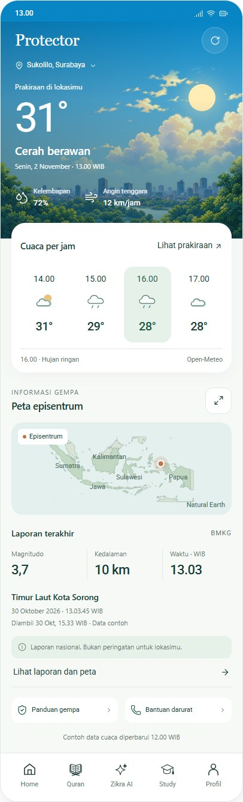
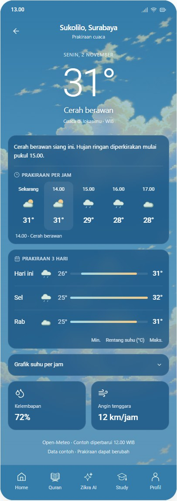
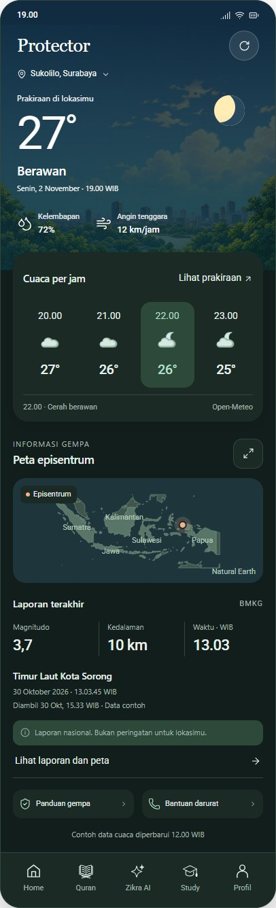
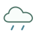
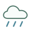
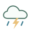

ZIKRA · REVISI 8 NOVEMBER 2026 · DATA CONTOH 2 NOVEMBER
Protector, tetap dekat dengan yang kamu suka.
Prakiraan per jam ditambahkan. Ilustrasi kota, peta gempa dan ikon Zikra dipertahankan.
01Protector · siang

02Detail · langit dan kartu transparan

03Protector · malam dan tema gelap

Satu keluarga ikon cuaca
10 kondisi · 2 tema · SVG + VectorDrawable Android
Cerah siang
Cerah malam
Cerah berawan
Berawan malam
Berawan

Hujan ringan

Hujan

Hujan petir
Berkabut
Belum tersedia